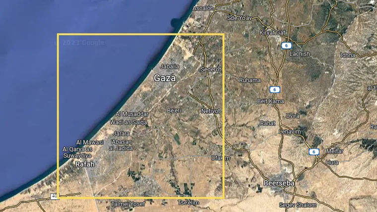
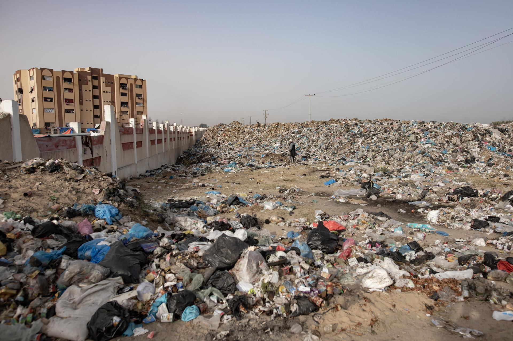
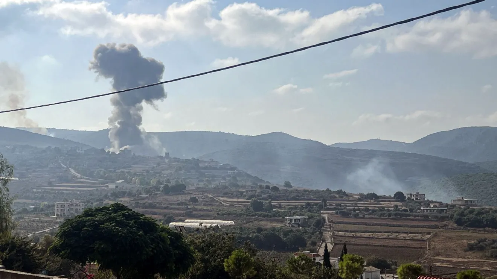
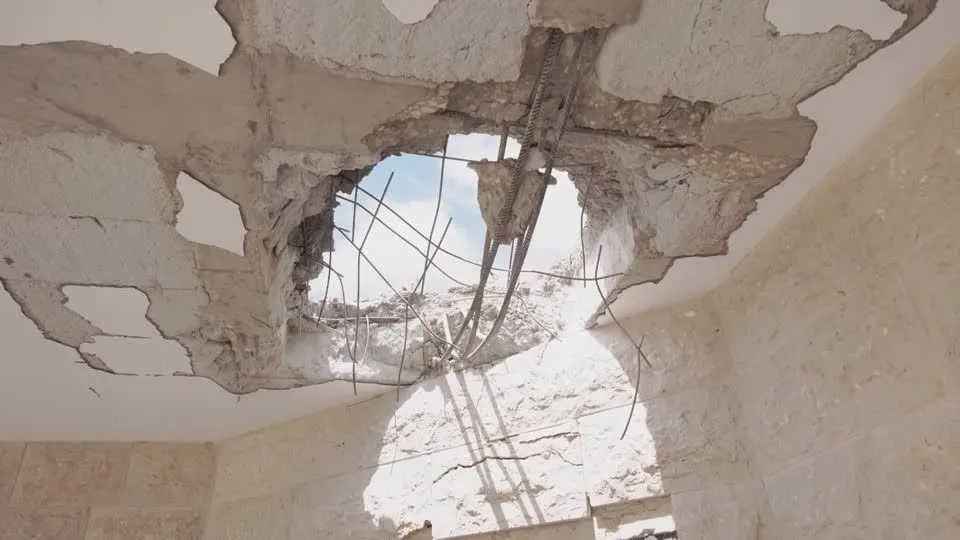
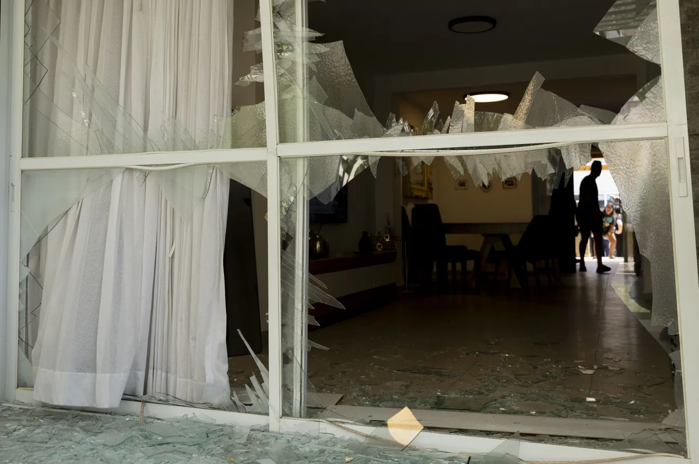
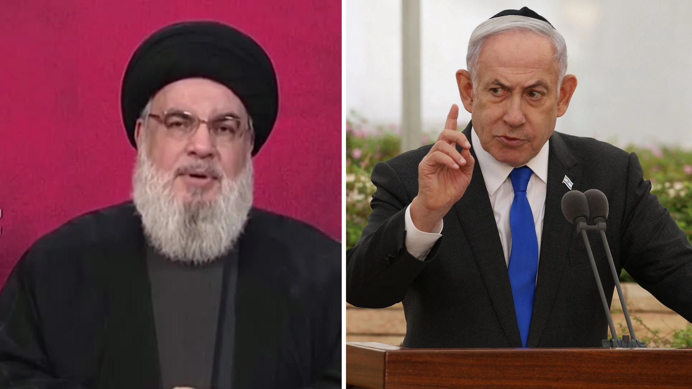
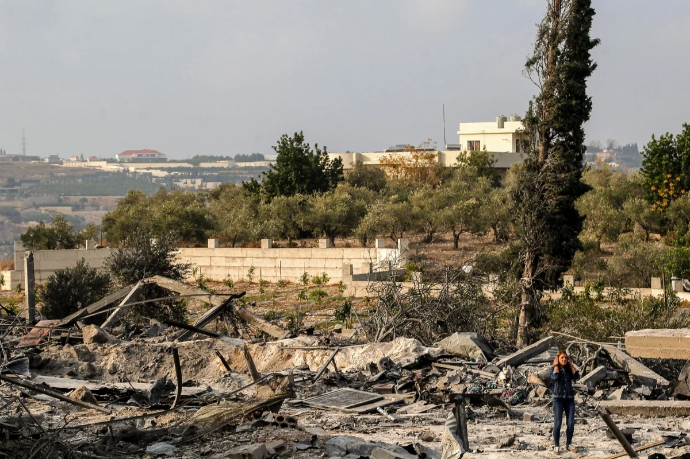

Grupo 2: ISRAEL X HEZBOLLAH (Faixa de Gaza)
Clique em um dos botões abaixo para ver o conteúdo.
Onde acontece o conflito

O conflito concentra-se na região do Sul do Líbano, fronteiriça com Israel, e se estende a áreas adjacentes como o Vale do Bekaa (centro-leste do Líbano) e o sudoeste da Síria (corredor de abastecimento do Hezbollah). O Líbano faz fronteira ao sul com Israel e ao leste/norte com a Síria; suas principais cidades envolvidas são Beirute (capital do Líbano) e, no vizinho Israel, cidades do norte como Haifa, Nahariya e Kiryat Shmona, alvo de foguetes do Hezbollah. Recentemente, camadas de gás natural na costa do Mediterrâneo tornaram-se estratégica e economicamente relevantes – por exemplo, áreas de campos de gás em disputa entre Israel e Líbano. Essa região é estratégica: controla rotas terrestres entre Líbano, Síria e Israel, e tem importância geopolítica por ser a única frente de conflito imediato entre Israel e um inimigo apoiado pelo Irã. Além disso, o Líbano sedia acampamentos de refugiados sírios e palestinos, refletindo o papel geopolítico da área.
/i.s3.glbimg.com/v1/AUTH_da025474c0c44edd99332dddb09cabe8/internal_photos/bs/2024/S/n/umV2snTQ6ra4E6AA0GqQ/mun-20-09-ataques-israel-libano.png)
Produzido por Giovanna Bueno
Surgimento do Conflito

O conflito entre Israel e o Líbano tem suas raízes no deslocamento da estrutura da Organização para a Libertação da Palestina (OLP) para o sul do Líbano a partir da década de 1970, transformando a região em base de operações para incursões e disparos de foguetes contra o norte israelense. Em resposta a esses ataques e em meio à Guerra Civil Libanesa, Israel promoveu uma grande invasão militar ao país em 1982 para expulsar a OLP, estabelecendo uma ocupação prolongada no sul libanês que catalisou a criação do Hezbollah, grupo político-militar xiita fundado com o apoio do Irã para combater a presença israelense. Desde então, o foco da hostilidade migrou da OLP para o confronto direto entre as forças de Israel e o Hezbollah, desencadeando recorrentes e graves crises militares ao longo das décadas, com destaques para a guerra de 2006 e as escaladas iniciadas em 2023.
Produzido por Nicolas Campos
Quem Participa
O conflito envolve diretamente o Estado de Israel e o grupo paramilitar libanês Hezbollah, mas também conta com a forte influência e participação indireta de outros atores regionais, como o Irã e o próprio governo do Líbano.
Israel
Representado pelo seu governo (liderado pelo primeiro-ministro Benjamin Netanyahu) e pelas Forças de Defesa de Israel (FDI). O país atua com o objetivo de proteger seu território contra ataques aéreos, destruir a infraestrutura militar inimiga na fronteira e garantir que os cidadãos israelenses evacuados do norte possam retornar com segurança para suas casas.
Hezbollah

É uma organização política e militar xiita que controla grande parte do sul do Líbano. O Hezbollah iniciou uma série de ataques contra o norte de Israel como forma de demonstrar apoio e solidariedade ao Hamas, após o início da guerra na Faixa de Gaza. O grupo possui um arsenal altamente desenvolvido de foguetes, drones e mísseis.
Atores Indiretos: Líbano e Irã
Embora as Forças Armadas oficiais do Líbano não estejam em guerra contra Israel, o país é o palco do conflito e sofre com a destruição de sua infraestrutura. Já o Irã é o principal financiador, fornecedor de armas e aliado estratégico do Hezbollah. O grupo libanês é a peça mais importante do chamado "Eixo da Resistência", uma aliança de grupos apoiados por Teerã que se opõem a Israel e aos Estados Unidos na região.
Produzido por Guilherme Tintore
Interesses

Interesses de Israel: Segurança e Proteção das Fronteiras (Norte): O objetivo primordial de Israel é desmantelar a infraestrutura militar do Hezbollah no sul do Líbano. Isso visa neutralizar a ameaça diária de mísseis, foguetes e incursões terrestres contra o norte de seu território. Retorno das Populações Deslocadas: Por conta dos constantes ataques de foguetes, dezenas de milhares de cidadãos israelenses foram obrigados a evacuar cidades no norte de Israel. Uma das prioridades do governo israelense é garantir segurança para restabelecer esses moradores. Dissuasão de Inimigos Regionais: Israel quer projetar uma imagem de força militar imbatível. Ao golpear severamente o Hezbollah, busca desencorajar o Irã e outros grupos de tentar novos ataques coordenados contra o território israelense. Afastamento Territorial do Grupo (Resolução 1701 da ONU): Israel exige que o Hezbollah recue suas forças para ao norte do rio Litani, criando uma zona de amortecimento (buffer zone) sem a presença do grupo armado junto à sua fronteira.
Interesses do Hezbollah: Manutenção da Narrativa de "Resistência": A razão de existir do Hezbollah e sua principal fonte de legitimidade interna e no mundo árabe é a postura de "frente de resistência" contra a expansão e ocupação israelense. Solidariedade e Pressão pelo Eixo da Resistência: O Hezbollah atua como uma "frente de apoio" a causas aliadas (como o Hamas na Faixa de Gaza). Ao atacar Israel pelo norte, o grupo busca forçar as forças israelenses a dividirem seus recursos e tropas em múltiplos fronts. Troca de Prisioneiros e Disputas Territoriais: Historicamente, o grupo utiliza o conflito para negociar a libertação de prisioneiros libaneses / palestinos e reivindicar pequenas áreas fronteiriças ainda disputadas (como as Fazendas de Shebaa). Consolidação de Poder Político no Líbano: Ao se posicionar como o único protetor capaz de confrontar Israel, o grupo justifica manter seu arsenal militar próprio, mantendo sua influência dominante sobre o governo e a política libanesa.
Interesses de países chave — Irã: Projeção de Poder Sem Confronto Direto (Guerra por Procuração). O Irã apoia e financia o Hezbollah para projetar sua influência geopolítica até a costa do Mediterrâneo, desafiando a hegemonia de Israel e dos EUA sem precisar entrar em uma guerra direta com o Ocidente. Apólice de Seguro e Dissuasão Estratégica: O vasto arsenal de mísseis do Hezbollah no Líbano serve como uma "apólice de seguro" iraniana: caso Israel ou os EUA tentem atacar as instalações nucleares do Irã, Teerã pode ordenar uma resposta devastadora do Hezbollah logo na fronteira israelense.
Estados Unidos e Potências Ocidentais: Estabilidade Regional e Livre Comércio. Os EUA buscam conter o conflito para evitar uma escalada que feche rotas de navegação no Oriente Médio e encareça os preços de energia global. Defesa de Israel e Contenção do Irã: Apoiam a segurança de Israel enquanto tentam enfraquecer financeiramente a rede de aliados patrocinada por Teerã.
Produzido por Nicolas Campos
Impactos

O conflito gera 4 principais impactos na região e na vida das pessoas: Humanitário e social, Econômico, Político/militar, além dos Impactos internacionais e Ambientais.
Impacto Humanitário e Social

Um dos principais impactos da guerra é a crise humanitária. Milhares de pessoas foram mortas ou feridas durante os confrontos, enquanto muitas famílias tiveram que abandonar suas casas para fugir dos bombardeios. Hospitais, escolas e residências foram danificados ou destruídos. Além disso, a população enfrenta dificuldades para conseguir alimentos, água potável, medicamentos e atendimento médico, aumentando o sofrimento de crianças, idosos e pessoas em situação de vulnerabilidade.
Impactos Econômicos

Na economia, a guerra provoca grandes prejuízos, principalmente no Líbano e em Israel. A destruição de empresas, plantações, estradas e construções prejudica as atividades econômicas e dificulta a recuperação das regiões atingidas. Também ocorre uma redução do turismo, dos investimentos e do comércio. Os governos precisam gastar mais dinheiro com armamentos, segurança, assistência à população e reconstrução das áreas destruídas.
Impactos Políticos / Militares

No campo político e militar, o conflito aumenta as tensões entre Israel, Líbano e Irã, além de envolver o interesse de outras potências internacionais, como os Estados Unidos. Existe também o risco de que a guerra se amplie e envolva outros países e grupos armados da região. Essa situação dificulta as negociações diplomáticas e a construção de acordos de paz duradouros.
Impactos Internacionais e Ambientais

A guerra também pode provocar consequências na economia mundial, especialmente no setor energético. Como o Oriente Médio é uma região importante para a produção e o transporte de petróleo, os conflitos podem gerar instabilidade nos preços internacionais dos combustíveis. Consequentemente, podem aumentar os custos de transporte, produção e comercialização de mercadorias, contribuindo para a inflação em diferentes países, inclusive no Brasil.
Outro impacto importante é o ambiental. Os bombardeios e as explosões provocam poluição do ar, contaminação do solo e da água, destruição de áreas agrícolas e prejuízos à vegetação e à biodiversidade. Esses danos podem permanecer por muitos anos, dificultando a recuperação ambiental e a sobrevivência das comunidades locais.
Produzido por Guilherme Tintore
Linha do Tempo do Conflito
Acompanhe os principais eventos históricos que marcaram as tensões entre Israel e Hezbollah desde o surgimento do grupo.
1982 – Início do conflito
Israel invade o Líbano durante a Guerra Civil Libanesa, com o objetivo de combater a Organização para a Libertação da Palestina (OLP). Nesse contexto, surge o Hezbollah, com apoio do Irã, inicialmente organizado para combater a presença militar israelense no território libanês.
1996 – Intensificação dos confrontos
Israel realiza uma ofensiva militar contra posições do Hezbollah no Líbano. Os ataques provocam mortes de civis, destruição de comunidades e aumento das tensões entre os dois lados.
2000 – Retirada das tropas israelenses
Israel retira suas forças militares do sul do Líbano, após quase duas décadas de ocupação. O Hezbollah considera a retirada uma vitória e continua mantendo sua estrutura política e militar no país.
2006 – Guerra entre Israel e Hezbollah
Em julho de 2006, o Hezbollah ataca uma patrulha israelense, mata soldados e captura dois militares. Israel responde com intensos bombardeios e operações terrestres no Líbano. O conflito dura aproximadamente 34 dias e provoca milhares de mortes e feridos, além de grandes destruições. Em agosto, um cessar-fogo é estabelecido com a participação das Nações Unidas.
2011 a 2022 – Participação na Guerra da Síria
Durante a Guerra Civil da Síria, o Hezbollah participa dos combates ao lado do governo de Bashar al-Assad, recebendo apoio do Irã. Nesse período, Israel realiza ataques contra alvos relacionados ao Hezbollah e ao Irã em território sírio, mantendo as tensões na região.
8 de outubro de 2023 – Retomada dos ataques
Um dia depois do ataque do Hamas contra Israel, em 7 de outubro, o Hezbollah começa a lançar foguetes contra posições israelenses, em apoio aos palestinos e ao Hamas. Israel responde com ataques aéreos e bombardeios no território libanês. Começa uma nova fase de confrontos na fronteira entre os dois países.
Setembro de 2024 – Escalada da guerra
Os confrontos se intensificam. Em 17 e 18 de setembro, explosões envolvendo aparelhos de comunicação utilizados por integrantes do Hezbollah atingem o Líbano. Em 27 de setembro, ataques israelenses matam Hassan Nasrallah, líder do Hezbollah, em Beirute.
Outubro de 2024 – Invasão terrestre do Líbano
Israel inicia operações terrestres no sul do Líbano, além de ampliar os bombardeios contra posições do Hezbollah. Milhares de famílias deixam suas casas para escapar da violência, enquanto a destruição de cidades e da infraestrutura aumenta.
27 de novembro de 2024 – Acordo de cessar-fogo
Israel e Hezbollah chegam a um acordo de cessar-fogo, negociado com participação dos Estados Unidos e da França. O acordo prevê a redução dos confrontos, a retirada das forças israelenses e o fortalecimento da presença do Exército libanês no sul do país. Entretanto, ataques e acusações de violações continuam nos meses seguintes.
2025 – Continuação das tensões
Mesmo após o acordo de cessar-fogo, Israel continua realizando ataques contra alvos que afirma estarem ligados ao Hezbollah. Também permanecem as divergências sobre a retirada das tropas israelenses e o desarmamento do grupo, dificultando a estabilização da região.
Março de 2026 – Nova escalada do conflito
Após ataques dos Estados Unidos e de Israel contra o Irã, em 28 de fevereiro de 2026, o Hezbollah volta a lançar mísseis contra Israel em 1º de março. Israel responde com bombardeios e operações terrestres no Líbano, provocando uma nova onda de deslocamentos populacionais e destruição.
Junho de 2026 – Tentativa de acordo
Os governos do Líbano, de Israel e dos Estados Unidos estabelecem uma estrutura de negociação para tentar encerrar o conflito. Entre as propostas estão o desarmamento do Hezbollah, o fortalecimento do Exército libanês e a retirada das forças israelenses do sul do Líbano. Entretanto, os confrontos continuam.
Outubro de 2026 – Persistência das tensões
Relatórios internacionais publicados em outubro indicam que ainda existem dificuldades para implementar os acordos e encerrar completamente os confrontos. A situação permanece delicada, principalmente devido às divergências sobre a presença militar israelense no Líbano e o desarmamento do Hezbollah.
Produzido por Guilherme Tintore
Quiz Interativo
Teste seus conhecimentos sobre o conflito Israel x Hezbollah. Selecione uma resposta para avançar. Na questão 6, marque todas as alternativas corretas.
Produzido por Guilherme Tintore